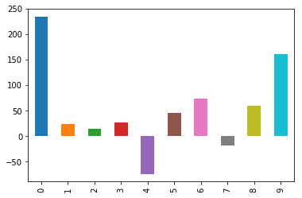
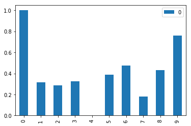

Learning machine learning? Try my machine learning flashcards or Machine Learning with Python Cookbook.
Normalize A Column In pandas
Preliminaries
# Import required modules
import pandas as pd
from sklearn import preprocessing
# Set charts to view inline
%matplotlib inlineCreate Unnormalized Data
# Create an example dataframe with a column of unnormalized data
data = {'score': [234,24,14,27,-74,46,73,-18,59,160]}
df = pd.DataFrame(data)
df| score | |
|---|---|
| 0 | 234 |
| 1 | 24 |
| 2 | 14 |
| 3 | 27 |
| 4 | -74 |
| 5 | 46 |
| 6 | 73 |
| 7 | -18 |
| 8 | 59 |
| 9 | 160 |
# View the unnormalized data
df['score'].plot(kind='bar')<matplotlib.axes._subplots.AxesSubplot at 0x11b9c88d0>

Normalize The Column
# Create x, where x the 'scores' column's values as floats
x = df[['score']].values.astype(float)
# Create a minimum and maximum processor object
min_max_scaler = preprocessing.MinMaxScaler()
# Create an object to transform the data to fit minmax processor
x_scaled = min_max_scaler.fit_transform(x)
# Run the normalizer on the dataframe
df_normalized = pd.DataFrame(x_scaled)# View the dataframe
df_normalized| 0 | |
|---|---|
| 0 | 1.000000 |
| 1 | 0.318182 |
| 2 | 0.285714 |
| 3 | 0.327922 |
| 4 | 0.000000 |
| 5 | 0.389610 |
| 6 | 0.477273 |
| 7 | 0.181818 |
| 8 | 0.431818 |
| 9 | 0.759740 |
# Plot the dataframe
df_normalized.plot(kind='bar')<matplotlib.axes._subplots.AxesSubplot at 0x11ba31c50>
